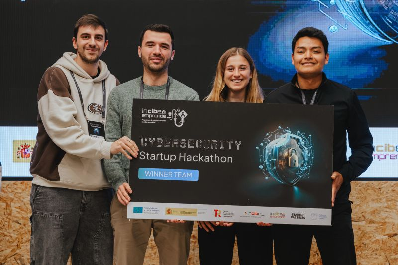

Cybersecurity startup hackathon

I decided to participate in the Cybersecurity Startup Hackathon, eager to learn as much as possible about this fascinating field, which was completely new to me.
After two intense days of brainstorming, researching, building, and pitching, we found ourselves winning. Our goal was to tackle a real-world cyber attack problem for Fourvenues, and turning an idea into a solution in such a short time was both challenging and incredibly rewarding.